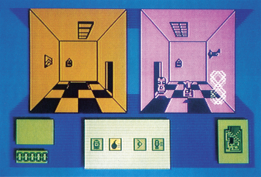
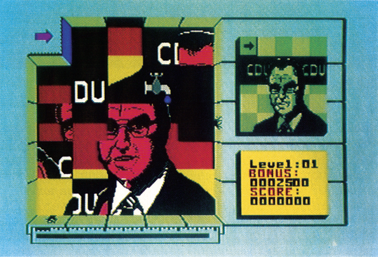

Denksport-Action
Was passiert, wenn man ein Denkspiel mit einem Actionspiel kreuzt, zeigen zwei neue Computerspiele, die Intelligenz und Reaktion erfordern.
Vorbei sind die Zeiten endloser Ballereien auf Raumschiffe und langgrübelnder Nächte über dem neuen Textadventure. Denn Logik und Action kann man jetzt auch gemeinsam kaufen. Zwei neue Spiele aus England bestimmen einen neuen Trend zu Actionspielen, die eigentlich nur mit viel Schnell-Denkerei zu bewältigen sind.
In die ferne Zukunft hat man die Handlung von »Deactivators« gelegt. Im Institut für Gravitationsforschung haben Terroristen einige Bomben gelegt, die innerhalb weniger Minuten explodieren können. Ihre Aufgabe ist es, mit einigen Robotern, den Deactivators, diese Bomben aus den insgesamt fünf unterschiedlichen Gebäuden zu schaffen.

Daß diese Aufgabe nicht einfach ist, versteht sich von selbst. Denn schließlich haben wir es hier mit Gravitations-Forschung zu tun. Der unangenehme Effekt: In manchen Räumen steht die Schwerkraft geradezu Kopf, oben und unten sind vertauscht, auch die Stärke der Gravitation stimmt nicht. Wenn es ganz schlimm kommt, ist »unten« sogar an einer der Seitenwände. Dies erschwert die Orientierung in den Gebäuden ungemein. Denn leider sind nicht alle Gebäude-Teile mit Türen verbunden. Folgerichtig müssen sich die Roboter die Bomben gegenseitig durch die inneren Fenster zuwerfen, bis schließlich einer mit der Bombe an einem Außenfenster ist und dort die Bombe entfernen kann.
Um das Ganze ein wenig zu erschweren, wurden die Robot-Wachen des Instituts darauf programmiert, Ihre Roboter gnadenlos zu verfolgen und zu vernichten. Zu guter Letzt haben die Terroristen auch einige Platinen aus den Computern entfernt und über das Gebäude verteilt. Ohne diese Platinen funktionieren aber einige wichtige Einrichtungen des Gebäudes, wie Teleporter und automatische Türen, nicht.
Die Roboter werden per Joystick direkt durch das Gebäude gesteuert. Sollen Spezialbefehle gegeben werden, erscheint auf Knopfdruck ein Menü mit Bildsymbolen. Die Grafik von Deactivators ist nicht gerade bunt oder wirkungsvoll, erfüllt aber durchaus ihre Aufgabe. Auch der Sound ist nur durchschnittlich. Das Spiel lebt aber nicht von großartigen Effekten, sondern von einem guten Spielprinzip und verteufelt schweren Problemen.
Nicht ganz so schwer, aber nicht minder unterhaltend ist »Split Personalities« von Domark. Dieses Programm erinnert an die beliebten Schiebepuzzle, bei denen ein Bild durch Verschieben von Bild-Elementen in Ordnung gebracht werden muß. Allerdings ist dieses simple Prinzip stark erweitert worden, um die Fähigkeiten eines Computers zu nutzen.

Zuerst einmal werden die Teile einzeln nacheinander ins Spielfeld geworfen, wenn der Spieler welche anfordert. Doch unter den Teilen befinden sich auch einige Überraschungen für den Spieler. Dies erläutern wir am besten an einem Beispiel. Beim ersten Puzzle gilt es, Helmut Kohl zusammenzusetzen. Neben Teilen des Bundeskanzlers fliegen aber auch mal eine Birne oder ein Kohlkopf auf den Schirm. Läßt man diese beiden zusammenfliegen, erhält man eine satte Zahl von Bonuspunkten. Ähnlich ist es mit den Logos der FDP und SPD. Eine böse Überraschung sind hingegen die Bomben, die innerhalb von fünf Sekunden explodieren. Entweder wirft man sie vorher durch eine der Öffnungen in der Spiel-Wand hinaus oder befördert einen Wasserhahn auf sie. Bei späteren Puzzles, die dann hauptsächlich Personen aus der englischen Regierung, dem Königshaus und der Computer-Szene zeigen, werden diese Bonus-Elemente gegen andere ausgetauscht und neue kommen hinzu. Das Spiel läuft gegen eine unerbittliche Uhr. Wenn der Spieler nicht rechtzeitig fertig wird, oder eine Bombe explodiert, wird eines der drei Leben abgezogen.
Die Bilder von Split Personalities sind zwar keine Meisterwerke, doch lassen sich die gesuchten Personen einwandfrei erkennen. Dazu gibt es eine rockige Musik und gute Sound-Effekte. Auch hier gilt, wie bei Deactivators, daß der Spielwitz das Entscheidende ist und Musik und Grafik weit hinter sich läßt.
(bs)| Titel | Deactivators |
|---|---|
| Spielidee | 11/15 |
| Grafik | 8/15 |
| Sound | 9/15 |
| Schwierigkeit | 13/15 |
| Motivation | 10/15 |
| Besonderheiten | Schwieriges Action-Denkspiel |
| Hersteller | Reaktor/Ariolasoft |
| Preis | 29 Mark (Kassette), 49 Mark (Diskette) |
| Bezugsquelle | Ariolasoft, Postfach 1350, 4830 Gütersloh 1 |
| Titel | Split Personalities |
|---|---|
| Spielidee | 9/15 |
| Grafik | 10/15 |
| Sound | 10/15 |
| Schwierigkeit | 12/15 |
| Motivation | 11/15 |
| Besonderheiten | Schnelles Schiebe-Puzzle |
| Hersteller | Domark |
| Preis | 39 Mark (Kassette), 59 Mark (Diskette) |
| Bezugsquelle | Rushware, Daimlerstr. 11, 4044 Kaarst 2 |